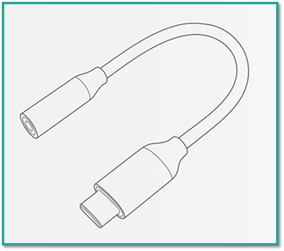
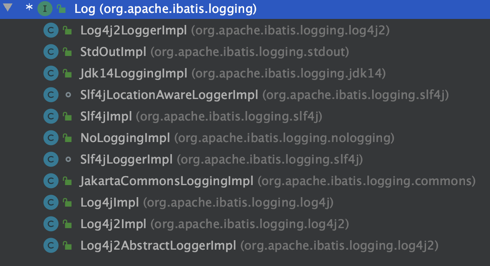
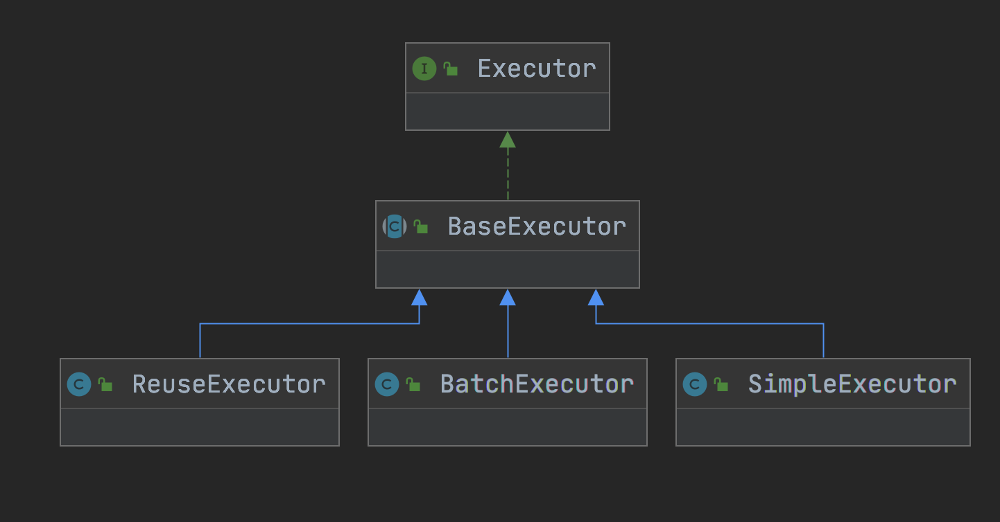
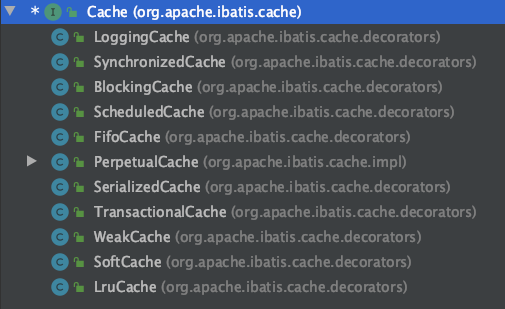

MyBatis 的前身是 IBatis，IBatis 是由 Internet 和 Abatis 组合而成，其目的是想当做互联网的篱笆墙，围绕着数据库提供持久化服务的一个框架，2010 年正式改名为 MyBatis。它是一款优秀的持久层框架，支持自定义 SQL、存储过程及高级映射。MyBatis 免除了几乎所有的 JDBC 代码以及设置参数和获取结果集的工作，还可以通过简单的 XML 或注解来配置和映射原始类型、接口和 Java POJO（Plain Old Java Objects，普通老式 Java 对象）为数据库中的记录。
关于 MyBatis 的介绍与使用，官方已经提供了比较详尽的中文参考文档，可点击这里查看，而本课时则以面试的角度出发，聊一聊不一样的知识点，它也是 MyBatis 比较热门的面试题之一，MyBatis 使用了哪些设计模式？在源码中是如何体现的？
注意：本课时使用的 MyBatis 源码为 3.5.5。
典型回答 1.工厂模式 工厂模式想必都比较熟悉，它是 Java 中最常用的设计模式之一。工厂模式就是提供一个工厂类，当有客户端需要调用的时候，只调用这个工厂类就可以得到自己想要的结果，从而无需关注某类的具体实现过程。这就好比你去餐馆吃饭，可以直接点菜，而不用考虑厨师是怎么做的。
工厂模式在 MyBatis 中的典型代表是 SqlSessionFactory。
SqlSession 是 MyBatis 中的重要 Java 接口，可以通过该接口来执行 SQL 命令、获取映射器示例和管理事务，而 SqlSessionFactory 正是用来产生 SqlSession 对象的，所以它在 MyBatis 中是比较核心的接口之一。
工厂模式应用解析：SqlSessionFactory 是一个接口类，它的子类 DefaultSqlSessionFactorys 有一个 openSession(ExecutorType execType) 的方法，其中使用了工厂模式，源码如下：
1 2 3 4 5 6 7 8 9 10 11 12 13 14 15 private SqlSession openSessionFromDataSource (ExecutorType execType, TransactionIsolationLevel level, boolean autoCommit) Transaction tx = null ; try { final Environment environment = configuration.getEnvironment(); final TransactionFactory transactionFactory = getTransactionFactoryFromEnvironment(environment); tx = transactionFactory.newTransaction(environment.getDataSource(), level, autoCommit); final Executor executor = configuration.newExecutor(tx, execType); return new DefaultSqlSession(configuration, executor, autoCommit); } catch (Exception e) { closeTransaction(tx); throw ExceptionFactory.wrapException("Error opening session. Cause: " + e, e); } finally { ErrorContext.instance().reset(); } }
从该方法我们可以看出它会 configuration.newExecutor(tx, execType) 读取对应的环境配置，而此方法的源码如下：
1 2 3 4 5 6 7 8 9 10 11 12 13 14 15 16 17 public Executor newExecutor (Transaction transaction, ExecutorType executorType) executorType = executorType == null ? defaultExecutorType : executorType; executorType = executorType == null ? ExecutorType.SIMPLE : executorType; Executor executor; if (ExecutorType.BATCH == executorType) { executor = new BatchExecutor(this , transaction); } else if (ExecutorType.REUSE == executorType) { executor = new ReuseExecutor(this , transaction); } else { executor = new SimpleExecutor(this , transaction); } if (cacheEnabled) { executor = new CachingExecutor(executor); } executor = (Executor) interceptorChain.pluginAll(executor); return executor; }
可以看出 newExecutor() 方法为标准的工厂模式，它会根据传递 ExecutorType 值生成相应的对象然后进行返回。
2.建造者模式（Builder） 建造者模式指的是将一个复杂对象的构建与它的表示分离，使得同样的构建过程可以创建不同的表示。也就是说建造者模式是通过多个模块一步步实现了对象的构建，相同的构建过程可以创建不同的产品。
例如，组装电脑，最终的产品就是一台主机，然而不同的人对它的要求是不同的，比如设计人员需要显卡配置高的；而影片爱好者则需要硬盘足够大的（能把视频都保存起来），但对于显卡却没有太大的要求，我们的装机人员根据每个人不同的要求，组装相应电脑的过程就是建造者模式 。
建造者模式在 MyBatis 中的典型代表是 SqlSessionFactoryBuilder。
普通的对象都是通过 new 关键字直接创建的，但是如果创建对象需要的构造参数很多，且不能保证每个参数都是正确的或者不能一次性得到构建所需的所有参数，那么就需要将构建逻辑从对象本身抽离出来，让对象只关注功能，把构建交给构建类，这样可以简化对象的构建，也可以达到分步构建对象的目的，而 SqlSessionFactoryBuilder 的构建过程正是如此。
在 SqlSessionFactoryBuilder 中构建 SqlSessionFactory 对象的过程是这样的，首先需要通过 XMLConfigBuilder 对象读取并解析 XML 的配置文件，然后再将读取到的配置信息存入到 Configuration 类中，然后再通过 build 方法生成我们需要的 DefaultSqlSessionFactory 对象，实现源码如下（在 SqlSessionFactoryBuilder 类中）：
1 2 3 4 5 6 7 8 9 10 11 12 13 14 15 16 17 18 public SqlSessionFactory build (InputStream inputStream, String environment, Properties properties) try { XMLConfigBuilder parser = new XMLConfigBuilder(inputStream, environment, properties); return build(parser.parse()); } catch (Exception e) { throw ExceptionFactory.wrapException("Error building SqlSession." , e); } finally { ErrorContext.instance().reset(); try { inputStream.close(); } catch (IOException e) { } } } public SqlSessionFactory build (Configuration config) return new DefaultSqlSessionFactory(config); }
SqlSessionFactoryBuilder 类相当于一个建造工厂，先读取文件或者配置信息、再解析配置、然后通过反射生成对象，最后再把结果存入缓存，这样就一步步构建造出一个 SqlSessionFactory 对象。
3.单例模式 单例模式（Singleton Pattern）是 Java 中最简单的设计模式之一，此模式保证某个类在运行期间，只有一个实例对外提供服务，而这个类被称为单例类 。
单例模式也比较好理解，比如一个人一生当中只能有一个真实的身份证号，每个收费站的窗口都只能一辆车子一辆车子的经过，类似的场景都是属于单例模式 。
单例模式在 MyBatis 中的典型代表是 ErrorContext。
ErrorContext 是线程级别的的单例，每个线程中有一个此对象的单例，用于记录该线程的执行环境的错误信息。
ErrorContext 的实现源码如下：
1 2 3 4 5 6 7 8 9 public class ErrorContext private static final String LINE_SEPARATOR = System.lineSeparator(); private static final ThreadLocal<ErrorContext> LOCAL = ThreadLocal.withInitial(ErrorContext::new ); public static ErrorContext instance () return LOCAL.get(); } }
可以看出 ErrorContext 使用 private 修饰的 ThreadLocal 来保证每个线程拥有一个 ErrorContext 对象，在调用 instance() 方法时再从 ThreadLocal 中获取此单例对象。
4.适配器模式 适配器模式是指将一个不兼容的接口转换成另一个可以兼容的接口，这样就可以使那些不兼容的类可以一起工作。
例如，最早之前我们用的耳机都是圆形的，而现在大多数的耳机和电源都统一成了方形的 typec 接口，那之前的圆形耳机就不能使用了，只能买一个适配器把圆形接口转化成方形的，如下图所示：

而这个转换头就相当于程序中的适配器模式，适配器模式在 MyBatis 中的典型代表是 Log。
MyBatis 中的日志模块适配了以下多种日志类型：
SLF4J
Apache Commons Logging
Log4j 2
Log4j
JDK logging
首先 MyBatis 定义了一个 Log 的接口，用于统一和规范接口的行为，源码如下：
1 2 3 4 5 6 7 8 9 public interface Log boolean isDebugEnabled () boolean isTraceEnabled () void error (String s, Throwable e) void error (String s) void debug (String s) void trace (String s) void warn (String s) }
然后 MyBatis 定义了多个适配接口，例如 Log4j2 实现源码如下：
1 2 3 4 5 6 7 8 9 10 11 12 13 14 15 16 17 18 19 20 21 22 23 24 25 26 27 28 29 30 31 32 33 34 35 36 37 38 39 public class Log4j2Impl implements Log private final Log log; public Log4j2Impl (String clazz) Logger logger = LogManager.getLogger(clazz); if (logger instanceof AbstractLogger) { log = new Log4j2AbstractLoggerImpl((AbstractLogger) logger); } else { log = new Log4j2LoggerImpl(logger); } } @Override public boolean isDebugEnabled () return log.isDebugEnabled(); } @Override public boolean isTraceEnabled () return log.isTraceEnabled(); } @Override public void error (String s, Throwable e) log.error(s, e); } @Override public void error (String s) log.error(s); } @Override public void debug (String s) log.debug(s); } @Override public void trace (String s) log.trace(s); } @Override public void warn (String s) log.warn(s); } }
这样当你项目中添加了 Log4j2 时，MyBatis 就可以直接使用它打印 MyBatis 的日志信息了。Log 的所有子类如下图所示：

5.代理模式 代理模式指的是给某一个对象提供一个代理对象，并由代理对象控制原对象的调用。
代理模式在生活中也比较常见，比如我们常见的超市、小卖店其实都是一个个“代理”，他们的最上游是一个个生产厂家，他们这些代理负责把厂家生产出来的产品卖出去。
代理模式在 MyBatis 中的典型代表是 MapperProxyFactory。
MapperProxyFactory 的 newInstance() 方法就是生成一个具体的代理来实现功能的，源码如下：
1 2 3 4 5 6 7 8 9 10 11 12 13 14 15 16 17 18 19 20 21 22 public class MapperProxyFactory <T > private final Class<T> mapperInterface; private final Map<Method, MapperMethodInvoker> methodCache = new ConcurrentHashMap<>(); public MapperProxyFactory (Class<T> mapperInterface) this .mapperInterface = mapperInterface; } public Class<T> getMapperInterface () return mapperInterface; } public Map<Method, MapperMethodInvoker> getMethodCache () return methodCache; } @SuppressWarnings ("unchecked" ) protected T newInstance (MapperProxy<T> mapperProxy) return (T) Proxy.newProxyInstance(mapperInterface.getClassLoader(), new Class[] { mapperInterface }, mapperProxy); } public T newInstance (SqlSession sqlSession) final MapperProxy<T> mapperProxy = new MapperProxy<>(sqlSession, mapperInterface, methodCache); return newInstance(mapperProxy); } }
6.模板方法模式 模板方法模式是最常用的设计模式之一，它是指定义一个操作算法的骨架，而将一些步骤的实现延迟到子类中去实现，使得子类可以不改变一个算法的结构即可重定义该算法的某些特定步骤。此模式是基于继承的思想实现代码复用的。
例如，我们喝茶的一般步骤都是这样的：
把热水烧开
把茶叶放入壶中
等待一分钟左右
把茶倒入杯子中
喝茶
整个过程都是固定的，唯一变的就是泡入茶叶种类的不同，比如今天喝的是绿茶，明天可能喝的是红茶，那么我们就可以把流程定义为一个模板，而把茶叶的种类延伸到子类中去实现，这就是模板方法的实现思路。
模板方法在 MyBatis 中的典型代表是 BaseExecutor。
在 MyBatis 中 BaseExecutor 实现了大部分 SQL 执行的逻辑，然后再把几个方法交给子类来实现，它的继承关系如下图所示：

比如 doUpdate() 就是交给子类自己去实现的，它在 BaseExecutor 中的定义如下：
1 protected abstract int doUpdate (MappedStatement ms, Object parameter) throws SQLException
在 SimpleExecutor 中的实现如下：
1 2 3 4 5 6 7 8 9 10 11 12 13 14 15 16 17 18 19 20 public class SimpleExecutor extends BaseExecutor public SimpleExecutor (Configuration configuration, Transaction transaction) super (configuration, transaction); } @Override public int doUpdate (MappedStatement ms, Object parameter) throws SQLException Statement stmt = null ; try { Configuration configuration = ms.getConfiguration(); StatementHandler handler = configuration.newStatementHandler(this , ms, parameter, RowBounds.DEFAULT, null , null ); stmt = prepareStatement(handler, ms.getStatementLog()); return handler.update(stmt); } finally { closeStatement(stmt); } } }
可以看出 SimpleExecutor 每次使用完 Statement 对象之后，都会把它关闭掉，而 ReuseExecutor 中的实现源码如下：
1 2 3 4 5 6 7 8 9 10 11 12 13 14 15 public class ReuseExecutor extends BaseExecutor private final Map<String, Statement> statementMap = new HashMap<>(); public ReuseExecutor (Configuration configuration, Transaction transaction) super (configuration, transaction); } @Override public int doUpdate (MappedStatement ms, Object parameter) throws SQLException Configuration configuration = ms.getConfiguration(); StatementHandler handler = configuration.newStatementHandler(this , ms, parameter, RowBounds.DEFAULT, null , null ); Statement stmt = prepareStatement(handler, ms.getStatementLog()); return handler.update(stmt); } }
可以看出，ReuseExecutor 每次使用完 Statement 对象之后不会把它关闭掉。
7.装饰器模式 装饰器模式允许向一个现有的对象添加新的功能，同时又不改变其结构，这种类型的设计模式属于结构型模式，它是作为现有类的一个包装。
装饰器模式在生活中很常见，比如装修房子，我们在不改变房子结构的同时，给房子添加了很多的点缀；比如安装了天然气报警器，增加了热水器等附加的功能都属于装饰器模式。
装饰器模式在 MyBatis 中的典型代表是 Cache。
Cache 除了有数据存储和缓存的基本功能外（由 PerpetualCache 永久缓存实现），还有其他附加的 Cache 类，比如先进先出的 FifoCache、最近最少使用的 LruCache、防止多线程并发访问的 SynchronizedCache 等众多附加功能的缓存类，Cache 所有实现子类如下图所示：

小结 本课时我们重点讲了 MyBatis 源码中的几个主要设计模式，即工厂模式、建造者模式、单例模式、适配器模式、代理模式、模板方法模式等，希望本课时的内容能起到抛砖引玉的作用，对你理解设计模式和 MyBatis 提供一些帮助，如果想要阅读全部的 MyBatis 源码可以访问：https://github.com/mybatis/mybatis-3 。